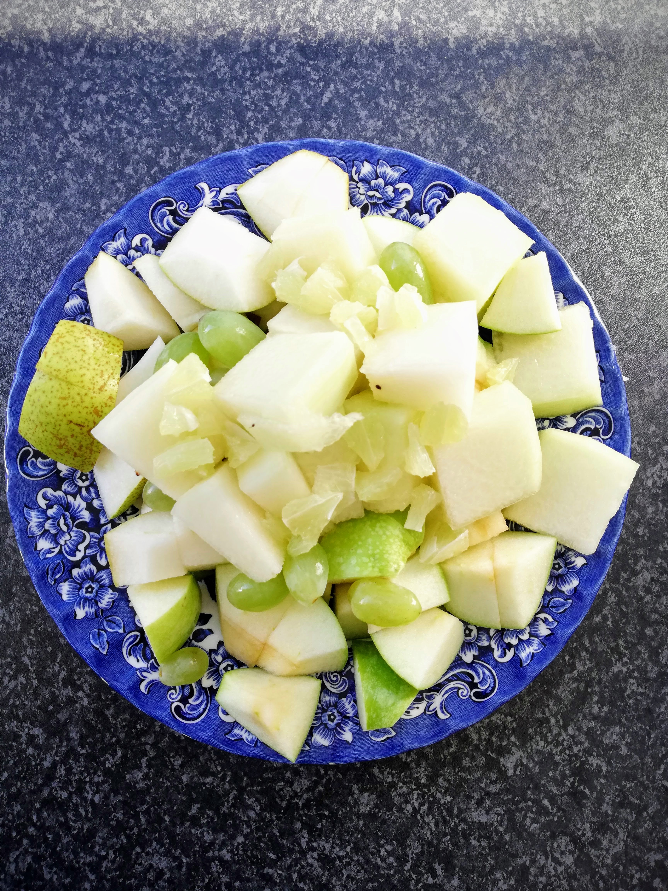
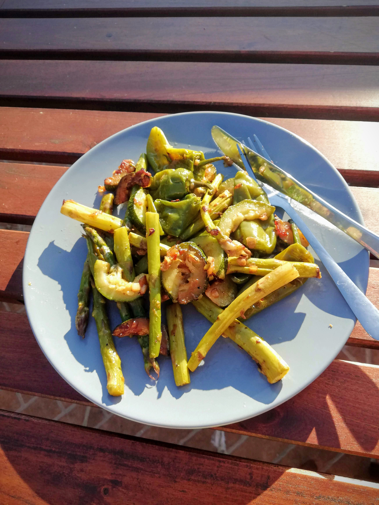

Green diet - Day 3 & 4
 Green smoothie 💚
Green smoothie 💚
Day 3
This morning I felt the hunger coming back in me as soon as I woke up. Thoughts of breakfast were already on my mind. I noticed that I was very much in the mood for my “normal” breakfast, although it is somewhat similar to that - well, without any carbohydrates and another fruit variety. However, when I was about to eat my fresh fruit, I was happy and full again. Today I added some lemon on top. That gave my breakfast a special sour taste, which I really enjoyed.

For early lunch I had mung beans with green lentils, served with savoy cabbage, leek and broccoli. During these green diet days I find mung beans really tasty, maybe because they satiate me a bit more in comparison! In any case, this is a personal discovery of a food that I would like to use more regularly in cooking from now on. I’ve never used mung beans to prepare anything myself, I’ve only eaten them with others. Try it out! 🙃

Apart from that, I can say on this third day that I still felt very well, despite the regular hunger. However, I think this is understandable without all the carbohydrates that are usually integrated in my meals.
For an early dinner I made myself a green smoothie today. I can warmly recommend that as well! I had a mixture of a special kind of cress, an apple, a kiwi, half a banana WITH peel - yes that’s allowed 😉 - and half a lime in addition.


This smoothie was really tasty, but a bit too bitter for me. Next time I’ll use some more sweet fruits.
You may have noticed that I always leave the skin on the kiwi. I’ve been doing this for years. For me it tastes even more intense with the skin and remains a very tasty fruit in my opinion. This also applies to the less popular, hairy kiwis. 😉 Many of the nutrients are in or directly under the shell and by removing them your body will not even be able to enjoy these valuable ingredients. Consider this as an invitation to try one or the other fruit WITH the shell and do your body even more favours.
Day 4
Today is “half time” - half of the green diet week is already mastered, so to speak, at least around noon.
For breakfast, I guess I don’t need to say much anymore: I ate the same fresh fruit as the last days. Also today I found this again a delicious and good mixture.
In fact, today I was not as hungry as the days before. It is often said that the body has to get used to this change during the first 1-3 days. So maybe I had truly arrived at all levels since today…
What I have noticed from time to time, however, are certain movements in the stomach area that seemed new to me. It felt a bit like internal cramps, but it was not really painful. I suspect detoxification processes in my body… and with this thought I can accept the feeling well and let my body do its work.
Then at lunch I just warmed up the leftovers from yesterday. It was the mung beans with lentils, broccoli, leeks and savoy cabbage. Even today this set still tasted wonderful. But that could also be because I took this food with me on our bike trip and then enjoyed it on the picnic blanket on the beach. This way everything tastes even better, doesn’t it?! ☀️

In the evening I found myself back in the kitchen, preparing some tasty dinner for my fourth’ day. This was fresh green asparagus, the remaining Pimientos de Padron and some zucchini. Everything was first steamed and at the end fried a little bit - delicious! Ready cooked I enjoyed the food outside in the evening sun.

I really felt more and more comfortable with this form of nutrition. I had a lot of energy in me and was more than happy about this decision. Thus I was looking forward to the 3 further days ahead. I will also tell you about those in my upcoming blog articles.
Important note: On my blog you can find tips and insights on the topics nutrition, health, body, mind and soul. These information are primarily based on my own experiences with it, so they can in no way replace a visit to the doctor. Please read my Disclaimer and consult your doctor if you have unclear symptoms.

Join next live class
Get Zoom linkElvira
Kundalini Yoga Trainer
I’m a Kundalini Yoga trainer and organize live classes online, onsite and for corporate businesses.